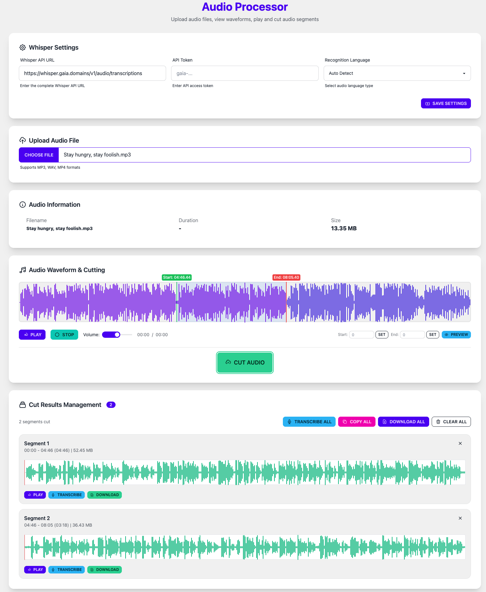

1
Prepare Audio File
Create a MP3 or WAV file for the person speaking without background noise. This will be the source material for training your voice clone.
💡
Tip: Record in a quiet environment using a good quality microphone for best results.
2
Segment and Transcribe
Use the following tool to upload, segment (into sentences) and transcribe the source audio file.
Processing Steps:
- Upload audio file
- Select sentence start/end positions
- Cut into segments
- Download segmented audio files and transcription

3
Finetune the TTS Model
Follow the GPT-SoVITS guide to finetune the TTS AI model using your prepared audio and transcription data.
Finetune Steps:
- Set up CUDA and PyTorch environments
- Use the audio and transcription files to finetune
- Export the finetuned model files for EchoKit TTS server
Export the finetuned model files for Echokit's Rust inference library
python GPT_SoVITS/stream_v2pro.py \
--gpt_model finetuned.ckpt \
--sovits_model finetuned.pth \
--ref_audio ref.wav \
--ref_text 'The text in the reference audio' \
--output_path jit/ad_v2_pro --version v2Pro --device=cuda
⚠️
Note: Model training takes considerable time. GPU acceleration is recommended. Monitor the loss function regularly during training.
4
Deploy the TTS Model
Deploy the finetuned model in the EchoKit streaming audio TTS server for real-time voice synthesis.
🚀 EchoKit TTS Server
✅
Complete! You can now "speak" any text using your cloned voice!